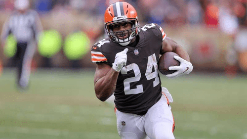
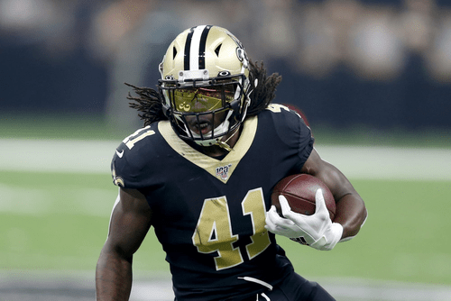

Running Back Basics Video
This video runs down the fundamentals and explains a little further into greater detail what exactly running back is and how the essential the position is just like the other 10 offensive positions on the field.
My expierence at running back

I choose to talk about this position in paticular because it was the primary position I played on my high school football team and I got very familiar with the position and actually watched professional running backs in the National Football League in attempts to learn and mirror the postive things they do to get better at my "craft". This actually was a great thing to do as I continued to improve my skills at the position each week and ultimately became the leading scorer on the team and winning the team MVP aware at the end of the season!
My Top 3 Running Backs Currently in the NFL
1. #23 Christian McCaffery

2. #24 Nick Chubb
3. #41 Alvin Kamara
